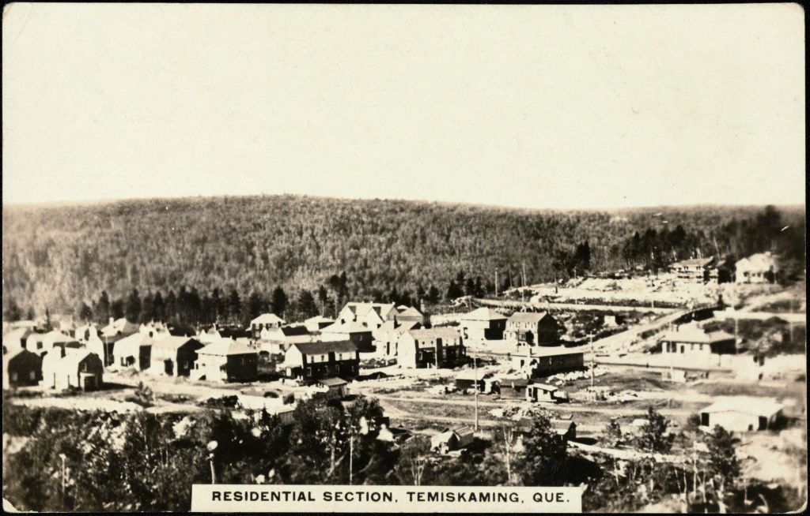

Lower-town company house (Ross and Macdonald, 1918–1923) Maison de compagnie de la ville basse (Ross and Macdonald, 1918-1923)

"Residential section, Temiskaming, Que.", postcard, circa 1930s — Bibliothèque et Archives nationales du Québec (BAnQ 3971732), author unknown. Public domain, via Wikimedia Commons (File:Residential section, Temiskaming, Que. (BAnQ 3971732).jpg); licence verified through the Commons API. A general view of the residential section, not a documented Type 171C house.
The houses Ross and Macdonald built in series for Riordon between 1918 and 1923, together with the mill and the commercial district: the whole lower town by one Montréal firm, to one aesthetic.
Thomas Adams laid the town on the hill and the mill below it in 1917; Riordon commissioned Ross and Macdonald, then Canada's largest architectural practice, to build everything downhill. CIP bought mill and town in 1925.
| Tenure / plan | mixed |
|---|---|
| Storeys | – |
| Roof form | – |
| Roof pitch | – |
| Window proportion | – |
| Principal cladding | – |
| Roofing | – |
| Garage | – |
| Lot width | – |
| Front setback | – |
| Side setback | – |
| Front yard green | – |
What CCA says about this type
- The lower town, on the more level ground where Gordon Creek meets the Ottawa River, below the hill; rue Anvik is documented as part of "le secteur plus ancien de la ville… à proximité de la première usine de pâtes et papiers".
- Elm Street carries the one documented model, Type 171C, photographed by Gabor Szilasi in 1995 "looking toward the Tembec factory".
- –
- –
- –
- –
No source attaches materials, roof form or storey count to Type 171C or to any other lower-town model. Row houses exist on rue Anvik (eight destroyed by fire in 2019) but their date is disputed: the fire chief said "over 80 years old" (pre-1939), Radio-Canada "construites dans les années 1940". Nothing here is inferred from photographs. Checked against the MRC de Témiscamingue inventory published 8 April 2026: it screened 1,730 pre-1940 buildings across the MRC but retains only three properties in the Ville de Témiscaming — the railway station, the Opémican log-drive relay post and the Gatineau Power forebay — none of them houses, and it carries no materials field. The regional house typologies it does document (maison de colonisation, maison de colonisation à trois pignons, grande maison carrée, maison de colonisation avec galerie ceinturante, cottage carré, maison à pignon sur rue avec galerie ceinturante, along 5e-et-6e Rang Est, 7e-et-8e Rang Est/Ouest, 9e Rang Est/Ouest, rue du Carrefour Nord and rue Principale Est/Ouest) are in Latulipe-et-Gaboury, not Témiscaming, and are rural colonisation types unrelated to company housing. This record therefore stands unchanged.
Same word elsewhere
- Central-gable house (maison à pignon central) (Gatineau)
- Complex gabled-roof house (maison à toit complexe à pignon) (Gatineau)
- Mansard-roofed house with gable wall on the façade (maison à toit mansardé avec mur pignon en façade) (Gatineau)
- One-and-a-half-storey wooden matchstick house (maison allumette en bois d'un étage et demi) (Gatineau)
- Wood matchstick house of two to two and a half storeys (maison allumette en bois de deux à deux étages et demi) (Gatineau)
- Brick matchbox house, two to two and a half storeys (maison allumette en brique de deux à deux étages et demi) (Gatineau)
- Cubic house (maison cubique) (Gatineau)
- CIP executive's house (maison de cadre de la CIP) (Gatineau)
- Flat-roofed wood house (maison en bois à toit plat) (Gatineau)
- Flat-roofed brick house (maison en brique à toit plat) (Gatineau)
- L-plan house with a two-slope (gable) roof (maison avec plan en L à toit à deux versants) (Gatineau)
- English-revival stone house (Hampstead)
- Postwar detached house (Hampstead)
- Garden City House (Town of Mount Royal)
- Faubourg House (Town of Mount Royal)
- Canadian House (Town of Mount Royal)
- New England House (Town of Mount Royal)
- Georgian House (Town of Mount Royal)
- English Manor House (Town of Mount Royal)
- Bungalow (Town of Mount Royal)
- Cottage (Town of Mount Royal)
- Split-Level (Town of Mount Royal)
- Prairie House (Town of Mount Royal)
- Modern house on the flank (Outremont (borough of Montréal))
- Faubourg house (Le Plateau-Mont-Royal (borough of Montréal))
- Detached urban house (Le Plateau-Mont-Royal (borough of Montréal))
- Row urban house (Le Plateau-Mont-Royal (borough of Montréal))
- Traditional French and Québécois house (Saint-Lambert)
- Mansard-roofed house of Second Empire influence (Saint-Lambert)
- Queen Anne style house (Saint-Lambert)
- Boomtown house with false mansard (Saint-Lambert)
- Boomtown house with crown (parapet or cornice) (Saint-Lambert)
- Cubic (Four Square) house (Saint-Lambert)
- House of Arts and Crafts influence (Saint-Lambert)
- The modern house (including the bungalow) (Saint-Lambert)
- Upper-district company house (Somerville, 1925–1950) (Témiscaming)
- Greystone row house (Westmount)
- Mansard-roofed house of Second Empire influence (Westmount)
- Queen Anne house (Westmount)
- Richardsonian Romanesque house (Westmount)
- Semi-detached brick house (Westmount)
- Tudor Revival house (Westmount)
- Arts and Crafts semi-detached house (Westmount)
Same form elsewhere
- –
Same period elsewhere
- Family A company houses (models A1–A8) (Arvida (borough of Jonquière, Saguenay))
- Family B company houses (models B1–B4) (Arvida (borough of Jonquière, Saguenay))
- Family C company houses (models C1–C6) (Arvida (borough of Jonquière, Saguenay))
- Family D company houses (models D1–D5) (Arvida (borough of Jonquière, Saguenay))
- Mixed-use building with a flat roof (édifice mixte à toit plat) (Gatineau)
- Side-gable duplex (duplex à mur pignon latéral) (Gatineau)
- Complex gabled-roof house (maison à toit complexe à pignon) (Gatineau)
- Brick matchbox house, two to two and a half storeys (maison allumette en brique de deux à deux étages et demi) (Gatineau)
- Cubic house (maison cubique) (Gatineau)
- CIP executive's house (maison de cadre de la CIP) (Gatineau)
- Flat-roofed wood house (maison en bois à toit plat) (Gatineau)
- Flat-roofed brick house (maison en brique à toit plat) (Gatineau)
- English-revival stone house (Hampstead)
- Garden City House (Town of Mount Royal)
- Faubourg House (Town of Mount Royal)
- Faubourg Apartment Block (Town of Mount Royal)
- Semi-detached single-family house (Outremont (borough of Montréal))
- Semi-detached duplex (Outremont (borough of Montréal))
- Detached single-family house (Outremont (borough of Montréal))
- Opulent detached residence (Outremont (borough of Montréal))
- Duplex without front setback (Le Plateau-Mont-Royal (borough of Montréal))
- Duplex with front setback (Le Plateau-Mont-Royal (borough of Montréal))
- Duplex with exterior stair (Le Plateau-Mont-Royal (borough of Montréal))
- Triplex with interior stair (Le Plateau-Mont-Royal (borough of Montréal))
- Triplex with exterior stair (Le Plateau-Mont-Royal (borough of Montréal))
- Multiplex (Le Plateau-Mont-Royal (borough of Montréal))
- Row urban house (Le Plateau-Mont-Royal (borough of Montréal))
- Apartment block without courtyard (Le Plateau-Mont-Royal (borough of Montréal))
- Apartment block with courtyard (Le Plateau-Mont-Royal (borough of Montréal))
- Small apartment building (Le Plateau-Mont-Royal (borough of Montréal))
- Mansard-roofed house of Second Empire influence (Saint-Lambert)
- Queen Anne style house (Saint-Lambert)
- Boomtown house with false mansard (Saint-Lambert)
- Boomtown house with crown (parapet or cornice) (Saint-Lambert)
- Cubic (Four Square) house (Saint-Lambert)
- House of Arts and Crafts influence (Saint-Lambert)
- Multi-dwelling building of plex type (Saint-Lambert)
- The "King Cottage" (Saint-Lambert)
- Semi-detached brick house (Westmount)
- Eclectic prestige house of the summit (Westmount)
- Tudor Revival house (Westmount)
- Arts and Crafts semi-detached house (Westmount)
- Interwar apartment house (Westmount)
Same style elsewhere
- Family F semi-detached houses (models F1–F18) (Arvida (borough of Jonquière, Saguenay))
- Families P, Q, S and T (paired and single models along boulevard du Saguenay and rues Powell, Neilson, Berthier, Parks, Joule) (Arvida (borough of Jonquière, Saguenay))
- Family R row houses (models R2–R4) (Arvida (borough of Jonquière, Saguenay))
- Wartime Housing Ltd. houses (Arvida (borough of Jonquière, Saguenay))
- First-generation North American bungalow (bungalow nord-américain de première génération) (Gatineau)
- Postwar detached house (Hampstead)
- Cottage (Town of Mount Royal)
- The "King Cottage" (Saint-Lambert)